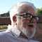
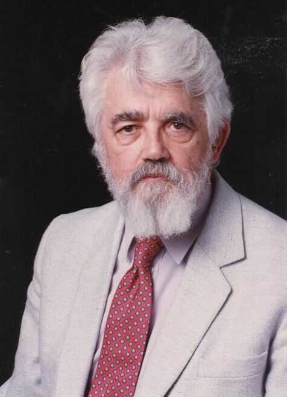

<div class="profile"><div>
  <div class="source">
LISP (1958)
  </div>
  <div class="detail">
    
    <div class="search"><a href="http://www.google.com/cse?cx=partner-pub-6997921015773263:4467526896&ie=UTF-8&q=John McCarthy" target="_blank"></a> | <a href="http://en.wikipedia.org/wiki/John_McCarthy_(computer_scientist)" target="_blank">wiki</a></div>
    <div class="name"><a href="http://www-formal.stanford.edu/jmc/" target="_blank">John McCarthy</a></div>
    <div class="info"><b>John McCarthy</b> (born September 4, 1927, in Boston, Massachusetts - <b>October 24, 2011</b>), is an American computer scientist and cognitive scientist who received the Turing Award in 1971 for his major contributions to the field of Artificial Intelligence (AI). He was responsible for the coining of the term "Artificial Intelligence" in his 1955 proposal for the 1956 Dartmouth Conference and is the inventor of the Lisp programming language. 
    <p>Lisp (or <b><a href="http://en.wikipedia.org/wiki/LISP" target="_blank">LISP</a></b>) is a family of computer programming languages with a long history and a distinctive, fully parenthesized syntax. Originally specified in 1958, Lisp is the second-oldest high-level programming language in widespread use today; only Fortran is older (by one year). <i>The name LISP derives from "LISt Processing"</i></p>
    </div>
  </div>
  <div class="photo">
    
  </div>
</div></div>